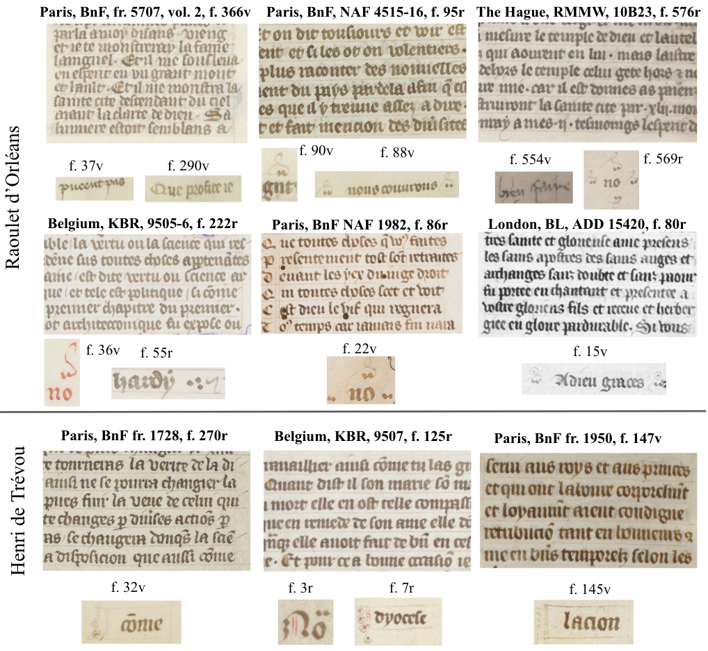

Reconciling Traditional and Computational Methods for the Analysis of Scribal Hands:
The Case of Raoulet d'Orléans and Henri de Trévou (fourteenth century)
Proceedings of the XXIIIrd Colloquium of the Comité International de Paléographie Latine (CIPL 2025)
(under review)
2 LIGM, Ecole des Ponts, Univ Gustave Eiffel, CNRS, Marne-la-Vallée


Abstract
This paper investigates scribal identification and intra-scribal variability through a combined computational and qualitative analysis of the hands of Raoulet d'Orléans and Henri de Trévou, two fourteenth-century écrivains du roi. Using a prototype-based deep-learning model (the Learnable Typewriter), we extract character prototypes from a comprehensive corpus of signed and attributed manuscripts. Morphological variation is examined through Principal Component Analysis (PCA), with axes defined exclusively from signed material, allowing attributed samples to be evaluated without confirmatory bias. The results reveal a high degree of graphical stability in Henri's hand, contrasted with pronounced, letter-specific variability in Raoulet's production. Focusing on outlier cases, the analysis engages with existing scholarship and highlights persistent inconsistencies in the attribution of manuscripts incorporating Textus Quadratus features to Raoulet. These findings underscore the need for more explicit and systematically argued criteria for scribal attribution in cases of graphic variability.
Case Study: Henri de Trévou and Raoulet d'Orléans

Figure 1: Handwriting and distinctive catchword/note examples from selected signed manuscripts by Raoulet d'Orléans and Henri de Trévou. © BnF (images in the public domain), KBR Belgium and The Hague, RMMW (images reproduced with permission).
Henri de Trévou and Raoulet d'Orléans are among the most prominent écrivains du roi active under Charles V during the last quarter of the fourteenth century. Both scribes primarily employ the late fourteenth-century Textualis Formata, yet display identifiable differences in execution. Henri's handwriting corresponds to a small, early form of Textus Rotundus, showing a high degree of consistency in letter morphology. Raoulet's preferred script corresponds to a stylized Semirotundus, yet his letterforms oscillate between features associated with Quadratus and Rotundus norms — a constitutive rather than incidental trait that complicates secure attribution of unsigned manuscripts.
The central methodological challenge lies in distinguishing the unique features of an individual hand from graphic traits reflecting shared training, milieu, or temporal evolution. This is especially acute for Raoulet, whose fluid adherence to script norms — and role as a libraire overseeing collective production — blurs the boundary between individual and contextual graphical features.
Dataset: 73 folios from 41 manuscripts (signed and attributed), covering the full documented corpus of both scribes. Data with details on the sampling method available via Zenodo.
Method
Character prototypes are extracted using the Learnable Typewriter, a prototype-based deep-learning model that reconstructs text lines by learning a dictionary of visual character patterns. Each prototype is an optimized average of all occurrences of a given character across a page, normalized for size, position, and intensity — analogous to the idealized reference alphabets used in traditional palaeography, while remaining expressive enough to capture fine-grained morphological variation.
Morphological variation across the corpus is then explored through Principal Component Analysis (PCA). Crucially, the principal components are computed exclusively from prototypes learned from signed manuscripts, and attributed samples are projected into this space without influencing its structure — avoiding confirmatory bias. This allows the structure of variation to emerge directly from securely attributed material, against which external samples can be independently evaluated.
For a fuller description of the PCA method and its application to a detailed case study, see the companion paper: Interpretable Deep Learning for Palaeographic Variability Analysis (Scriptorium, forthcoming 2026).

Figure 2: PCA plot of the letter ‹a›. Signed samples are shown as filled circles; attributed samples projected off-PCA are shown as ×. Outliers per scribe (circled in blue for Henri de Trévou, and in red for Raoulet d'Orléans) are highlighted in the graph.
Outlier Analysis: the letter ‹a›
The PCA of the letter ‹a› (PC1 ~27% of variance) captures a morphological continuum from compact, rounded forms to vertically elongated letterforms with an angular upper bow — reflecting the co-occurrence of the two-compartment allographs box-a and Quadratus-a. Henri's prototypes occupy a compact, stable region; Raoulet's are markedly more dispersed, with PC2 (~19%) capturing internal diversity in the lower bow and upper compartment shape.
Several prototypes fall outside or at the margins of their expected cluster, revealing both internal scribal evolution and inconsistencies in the attribution literature:
- HT91 (BnF, fr. 24287, fol. 85r): Closer codicological examination reveals a misidentified hand-change point: the shift from Raoulet to Henri actually occurs at fol. 85v, not fol. 82r as previous scholarship assumed. The model thus independently reproduces a distinction verifiable through codicological evidence.
- HT12 (BnF, fr. 437, fol. 228r) displays an angular upper-bow tip, a pronounced back, and the co-occurrence of two ‹a› allographs in a fused state, aligning with a Quadratus variant. Although doubts were already raised by Léopold Delisle on its attribution status, some catalogues nonetheless maintain this attribution.
- HT13 (BnF, fr. 9749, fol. 22v) is morphologically close to HT12, catalogued as Henri's in the BnF catalogue without supporting argumentation, and consistently deviates from his standard profile across letters — inviting renewed study and attribution, particularly in the absence of Henri's characteristic paratextual markers.
- RO161 (Harvard Library, Typ. 555, vol. I, fol. 5v) diverges significantly from the second volume of the same codex (RO162). These differences support Monica Peretto's doubts on the attribution of the first volume to Raoulet.
- RO22 (Belgium, KBR, MS 10319) departs from Raoulet's conventions with a disarticulated lower bow in ‹a›. Moica Peretto proposes that the codex was copied by three distinct hands, a hypothesis partially supported by our results.
- RO222 (BnF, fr. 12465, fol. 147v): The prototype, coming from a signed manuscript, preserves Raoulet's characteristic angular upper bow but shows a more vertically compact form compared to the beginning of the same manuscript (RO221), reflecting internal evolution toward the end of the volume.
Taken together, these cases highlight the need for more explicit and systematically argued criteria for scribal attribution in cases of graphic variability, and how prototype-based methods can assist in this process.
References
- Wolfgang Oeser, « Raoulet d'Orléans und Henri du Trévou, zwei französische Berufschreiber des 14. Jahrhunderts und ihre Schrift », Archiv für Diplomatik, 42, Köln, Böhlau, 1996, p. 395–418.
- Monica Peretto, Raoulet d'Orléans e la copia di manoscritti a Parigi nella seconda metà del XIV secolo, Doctoral dissertation, Università Ca' Foscari Venezia, 2014.
- Richard H. Rouse & Mary A. Rouse, Manuscripts and their Makers: Commercial Book Producers in Medieval Paris, 1200–1500, London: Harvey Miller, 2000, vol. 1 & 2.
- François Avril, « La Bible historiale de Charles V », in The Marks in the Fields: Essays on the Uses of Manuscripts, Cambridge, MA: Houghton Library, Harvard University, 1992.
Cite Us
@inproceedings{vlachou2027scribal-hand-variability,
title = {Reconciling Traditional and Computational Methods for the
Analysis of Scribal Hands: The Case of Raoulet d'Orléans
and Henri de Trévou},
author = {Vlachou-Efstathiou, Malamatenia},
booktitle = {Proceedings of the XXIIIrd Colloquium of the Comité
International de Paléographie Latine (CIPL 2025)},
note = {under review},
year = {2027},
url = {}
}Acknowledgements
This study was supported by the CNRS through MITI and the 80|Prime program (CrEMe — Caractérisation des écritures médiévales), and by the European Research Council (ERC project DISCOVER, number 101076028).